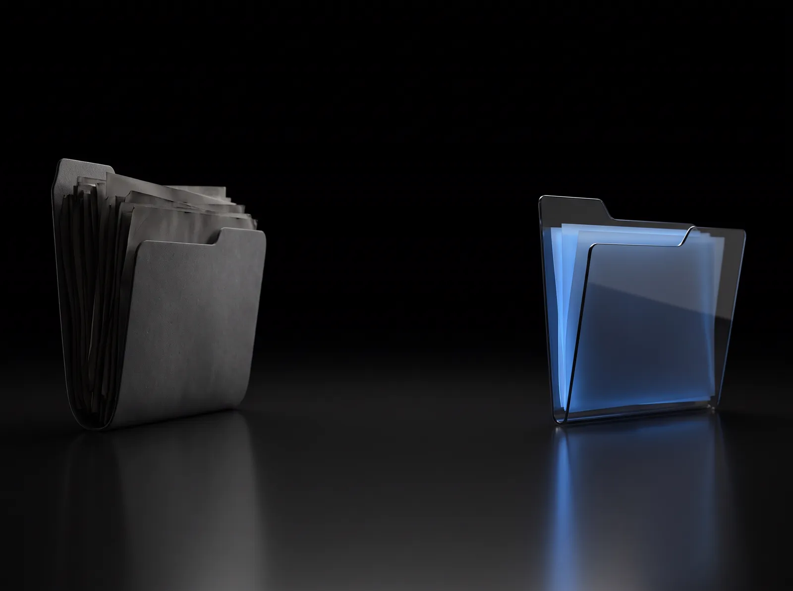
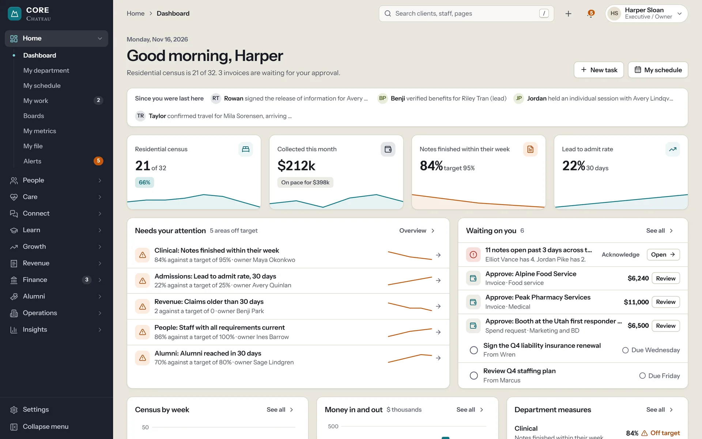
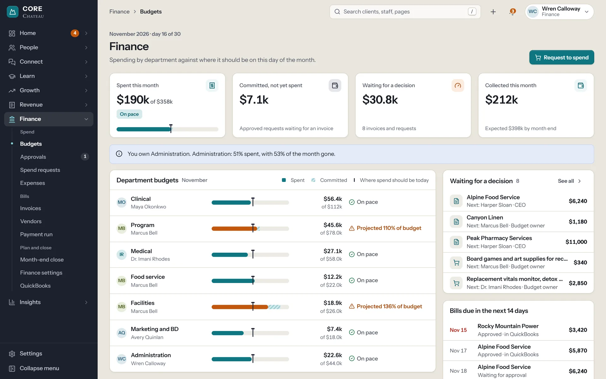
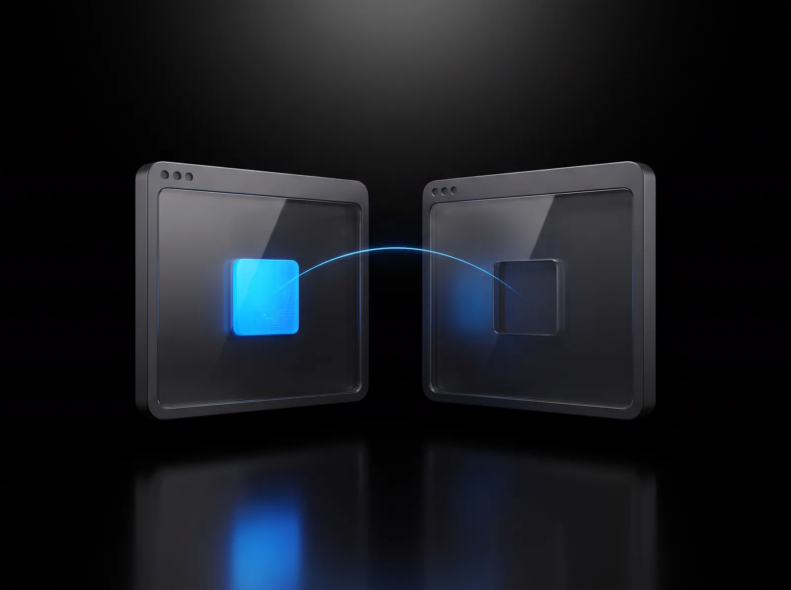

Pick what you like from the CORE UI Mockup.
Two prompts and one walk-through. Claude sets it up, takes notes while you talk, and writes up your picks.
About 30 minutes. For a Mac with the Claude desktop app.
Two prompts and one walk-through. Claude sets it up, takes notes while you talk, and writes up your picks.
About 30 minutes. For a Mac with the Claude desktop app.
Clone the mockup into its own folder, outside treatment-app-blueprint, and start a fresh Claude session there.
Claude sees only the mockup, so its review isn't shaped by how CORE is built today.

A clean place for Claude to work.
Claude clones the mockup and opens it.
Copy and pasteDictate what you like as you click around.
Claude writes your picks to one file.
Claude builds your picks on a new branch.
Copy and pasteAccept the invite to ChateauHealth/CORE-UI-Mockup. The repo is private, so the clone fails without it.
The Claude desktop app, on the Code tab. Claude Code in a terminal works too.
Wispr Flow, or the dictation built into your Mac. Anything that types what you say.
Prompt one has Claude check Node.js and your GitHub sign-in. If either is missing, it tells you what to do.
1Step 1 of 5
Make a folder called core-mockup-review in your home folder. In Claude, start a new session and choose that folder.
Use that exact name and both prompts work with no edits.
Your home folder
2Step 2 of 5
Claude clones the mockup, opens the preview and reads the code. It changes nothing.
Wait until it says the mockup is ready.
Set up the CORE UI Mockup so I can review it. Work only inside this folder. 1. Check that Node.js is installed and that my GitHub sign-in can reach the private repo. If either fails, stop and tell me exactly what to do, in plain steps. 2. Clone https://github.com/ChateauHealth/CORE-UI-Mockup into this folder. 3. Read its CLAUDE.md and README, install what it needs, start it, and open the preview in my browser. 4. Read through the code so you know which files build each page and component. This is a read-only review: do not change, fix or improve anything. Tell me when it's ready, then wait. Next I'll click through the preview and dictate what I like, over one or more messages. Dictation makes mistakes, so match what I say to the nearest real page, heading or component. Ask only if you truly can't tell. Don't write any files yet. Reply "Noted" with a short list of what you matched. When I say "that's everything", write "CORE DESIGN MOCKUP PICKS.md" in this folder, outside the clone. For each pick, list: - Name, and whether it's a page, component, feature or style - Where to find it: module, page, the heading on screen, and the role to view it as - What it's for - What I liked about it, in my words - Code: every file that builds it (page, shared components, CSS, design tokens), as paths from the repo root End the file with a short note on using it in CORE: the mockup is plain React and CSS with made-up data, so each pick should be rebuilt with CORE's own components, not copied over. Then give me the file's full path.
This one prompt covers steps 2, 3 and 4.
Every name and number in it is made up. Use the role switcher, top right, to see CORE as ten different staff.

Role switcher3Step 3 of 5
Click into Claude's message box, start Wispr Flow, and say what you like as you move through the preview.
Send as many messages as you want. Claude replies “Noted” and keeps listening.
“I'm on the Finance Budgets page. I love the Department budgets panel, with the bars that show where spend should be today. I want that.”
“I like the budget thing.”

Department budgetsRead it off the top bar.
“I'm on Finance, Budgets.”A panel, table, button, colour or layout. Use any words on screen.
“The Department budgets panel.”Pages change by role.
“I'm viewing as Finance.”Layout, colour, wording or behaviour.
“I like the marker for where spend should be today.”4Step 4 of 5
Claude writes one file in your review folder. Each pick lists where it is, what it's for, what you liked and the code that builds it.
2. Waiting for a decision list · 3. Billing review table · …
5Step 5 of 5
Start a new session in treatment-app-blueprint. Claude builds each pick on a new branch with CORE's own components. Nothing goes live.
Used a different folder name in step 1? Change the two paths at the top.
Read "~/core-mockup-review/CORE DESIGN MOCKUP PICKS.md". It lists the parts of the CORE UI Mockup I want in CORE, and the mockup files that build each one. The mockup itself is at ~/core-mockup-review/CORE-UI-Mockup. Treat that folder as read-only reference. Bring every pick into this app in one pass: 1. For each pick, find where it belongs here and what already exists. Rebuild it with CORE's own components, design tokens and patterns. Match the look and behaviour. Never copy the mockup's sample data. 2. Work on a new branch and follow this repo's own rules. Do not merge, deploy, or touch staging or production. 3. Build the picks in the order listed, and check each one in the preview before moving on. 4. Don't stop to ask me about small choices. Make the sensible call and write it down. Stop only for something that would change real data, permissions or what staff see in production. When you're done, give me one summary: what you built and where to see it, what you skipped or changed and why, and anything that needs my decision.
One pass, on a branch. You review at the end.
Do the steps Claude gives you, then:
“Done. Try again.”In the review session:
“Open the preview again.”Back in the review session, dictate them, then:
“Update the picks file.”Look over the branch Claude built, then decide what ships.
